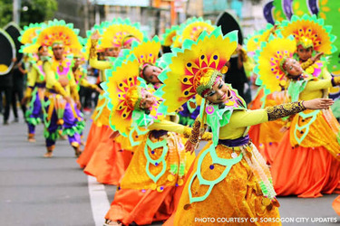
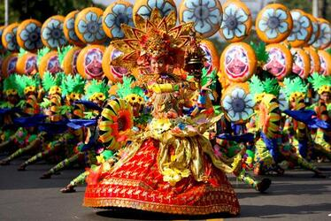
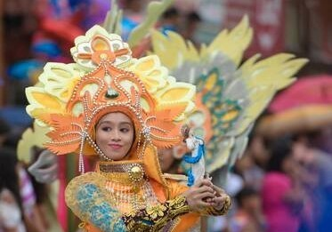
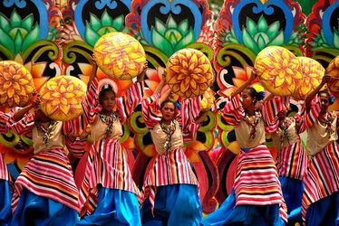

Sorsogon
Bulusan Volcano Natural Park
Bulusan Volcano Natural Park is a treasured natural wonder and one of the most recognized Bicol tourist spots.
This protected natural park covers rainforests, grassland, hot springs gardens, and farmland.
Donsol (Whale sharks)
Donsol is Sorsogon’s most popular destination as it is world-famous for whale shark viewing. Several whale sharks (locally called butanding) naturally congregate around Donsol waters from December to May.
Swimming with Donsol whale sharks is considered a safe activity as these sea animals are known to be friendly and gentle.
Subic Beach
3. Subic Beach is a gorgeous and unspoiled 300-meter sandy stretch on Calintaan Island, Sorsogon. The beach is known for its powdery sand, which features a pinkish-white color.
This rare color is due to the presence of tiny red corals around the shoreline.
|  |
Pili Festival - Sorsogon (June 28 - 29)Pili is an indigenous crop of the Bicol region, particularly Sorsogon. Coinciding with the city’s patronal fiesta, the festival showcases the Pili, known as “The Majestic Tree” because of its myriad economic uses. A street dance presentation, a highlight of the festival, presents the three growth stages of the Pili, from green (young fruit) to violet (half-mature) to black (mature). The Pili nut is being processed into different kinds of sweets and delicacies. |
|  | Kasanggayahan Festival - Sorsogon (October 1 - 31)The Kasanggayahan Festival is largest celebration for the whole province of Sorsogon. It commemorates the dedaralion of Sorsogon as a province. With the term “kasanggayahan· meaning prosperity, the festival showcases the local products including products from the pili tree and other agricultural products. |
|  | Padaraw Festival - Bulan Sorsogon (May 30)A festival showcasing colorful costumes fashioned from abaca fiber. It is highlighted by a grand street presentation with the participants clad in these colorful abaca costumes. |
|  | Hin-ay Festival - Irosin Sorsogon (September 28 - 29)This festival is a commemoration of the feast day of the town’s patron, St. Michael the Archangel, and at the same time a rediscovery of the town’s cultural heritage. The festival traces the struggles of the people of Irosin at various stages of its history and aims to renew the enthusiasm in community building. Various activities include the Mardi Gras, which depicts the victory of the Archangels over the Black Angel, cultural show, agro-trade fair, beauty pageant, food festival, among others. |